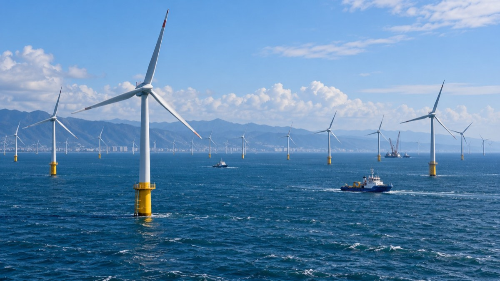
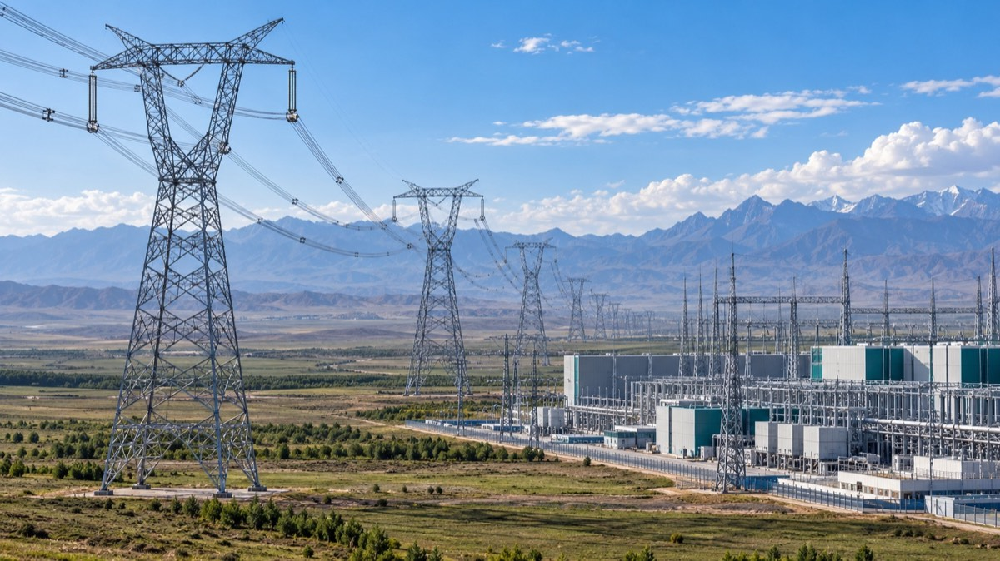
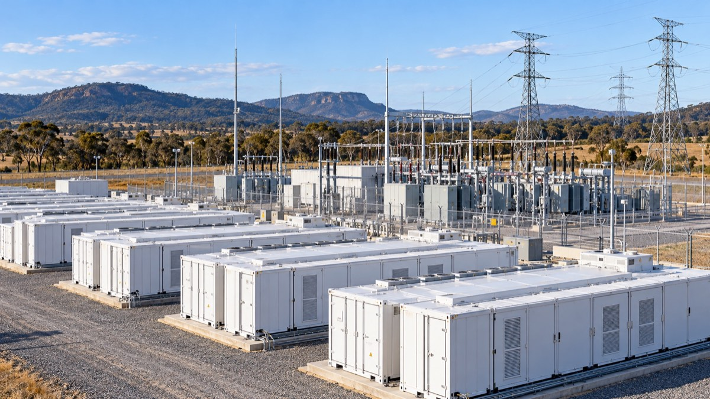
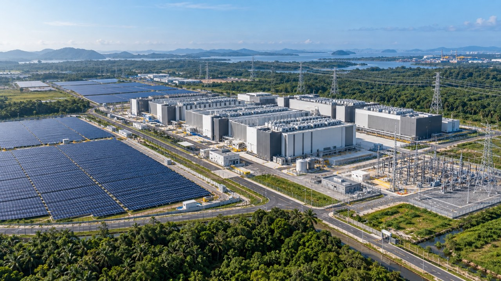

雲林離岸風場以 640 MW 容量進入全面商業運轉
全部 80 座風力發電機均已併網，專案也已進入營運與維護階段。
以事件為核心的報導，連結來源紀錄、固定識別碼與受控編輯流程。

全部 80 座風力發電機均已併網，專案也已進入營運與維護階段。

這條全長 1,616 公里、電壓等級為正負 800 kV 的輸電工程，連接再生能源資源豐富的寧夏與湖南負載中心。

首批 350 MW / 700 MWh 容量投入服務；整套系統規劃容量為 850 MW / 1,680 MWh，目的在支援新南威爾斯州電網。

AWS 表示，新區域由三個可用區組成，並獲得公司在泰國規劃逾 50 億美元投資的支持。
這項為期四年的承諾涵蓋新的雲端與 AI 基礎設施、技能培訓計畫，以及對印尼開發者社群的支持。
兩家公司表示，規劃中的 AI 基礎設施將設於 YTL 位在柔佛州古來的綠色資料中心園區。2023 年 12 月的公告將該設施規模描述為 500 MW。
沒有符合目前篩選條件的已驗證報導。